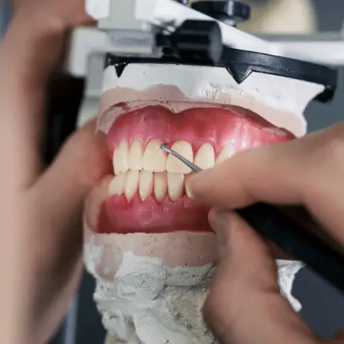
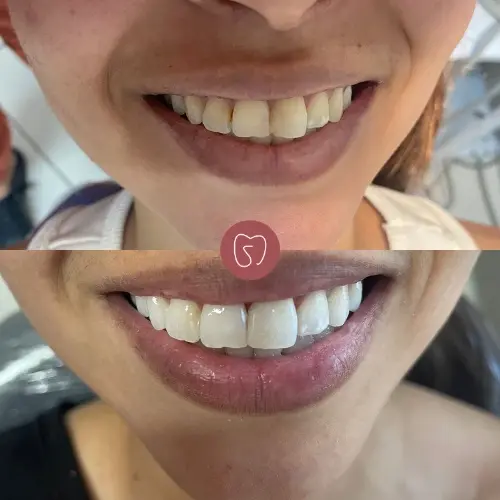
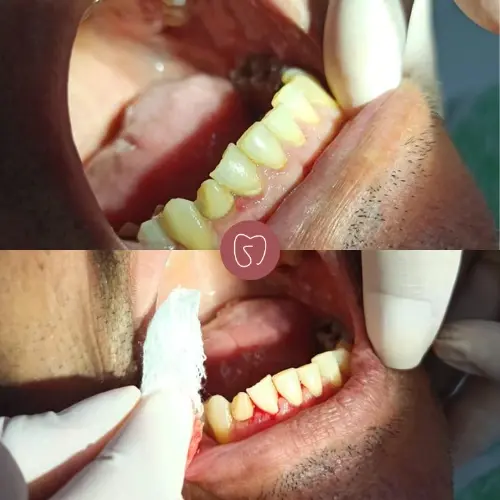
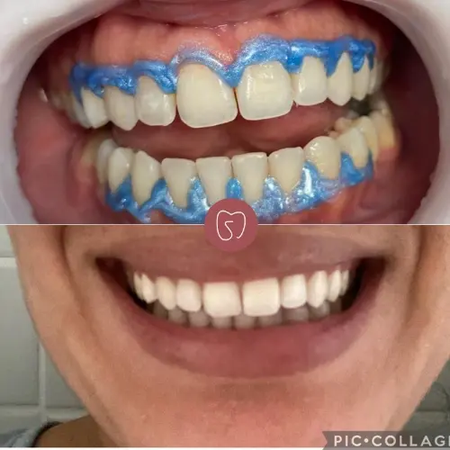
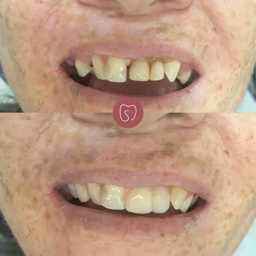
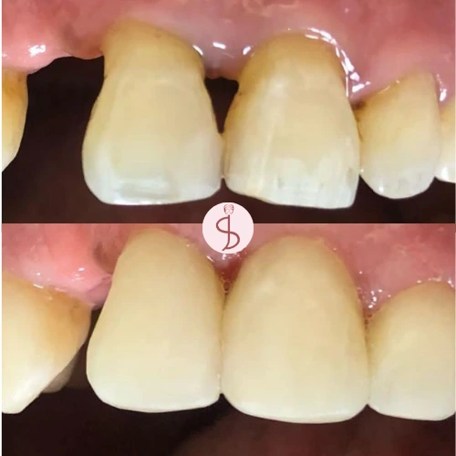

Sobre
Sou uma profissional apaixonada pela odontologia e comprometida em transformar sorrisos e elevar a autoestima dos meus pacientes! Para mim, a odontologia vai além de tratar dentes - é uma oportunidade de fazer a diferença na vida das pessoas, ajudando-as a alcançar um sorriso saudável e lindo que irradie confiança e felicidade.
Tratamentos

Aparelho Ortodôntico
Os aparelhos ortodônticos são dispositivos utilizados por ortodontistas para corrigir problemas de alinhamento dos dentes e da mordida, promovendo um sorriso saudável e esteticamente agradável.

Clareamento
O clareamento dental é um procedimento estético realizado para clarear a cor dos dentes, tornando-os mais brancos e brilhantes.

Exodontia
A exodontia é um procedimento cirúrgico odontológico que envolve a remoção de um dente da boca.

Facetas
As facetas dentárias em resina são uma opção estética popular para melhorar a aparência dos dentes.

Profilaxia
A profilaxia dental é um procedimento preventivo realizado por profissionais de odontologia para manter a saúde bucal e prevenir problemas dentários.

Prótese
A prótese dentária é uma estrutura utilizada para reparar os dentes ou substituir um ou mais dentes que estão em falta, promovendo a restauração da autoestima e melhorando a mastigação e fala.

Restauração
A restauração dentária é um procedimento odontológico realizado para reparar um dente danificado ou com cárie, restaurando sua forma, função e estrutura adequadas.
Resultados






